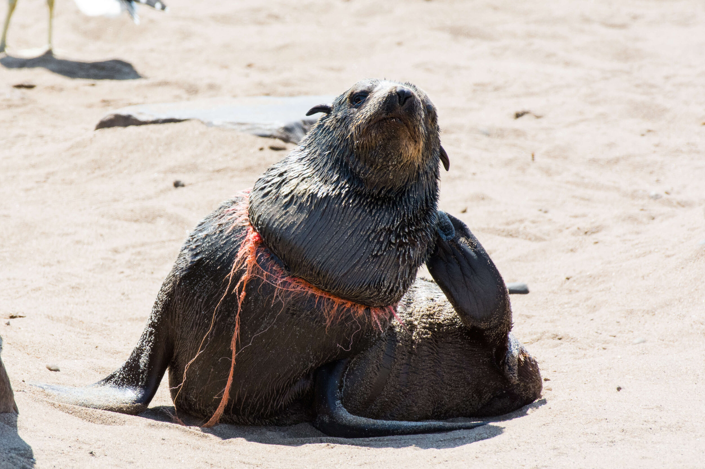
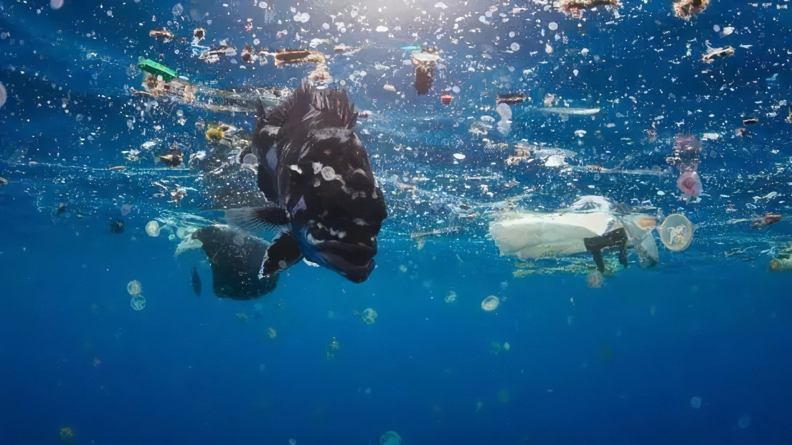
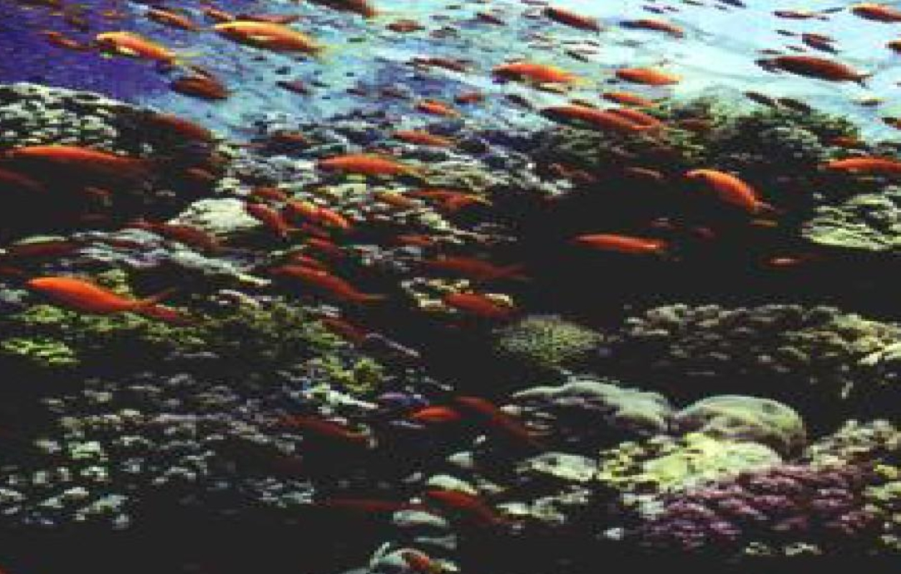
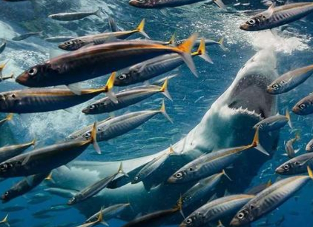

海洋汚染の危害
-

1.海洋に生息する動物たち
毎年世界中で10万匹以上の海に棲む哺乳類がプラスチックを誤って摂取したり海洋ゴミに絡まることで命を落としています。これまでに少なくとも690種類以上の野生動物が被害にあっていると言われています。その内、15%以上は絶滅危惧種に指定されている動物たちです。
-

2.人類に対する危害
汚染された海鮮を食べた私たちは最終的にどうなるのでしょうか
-

3.生息地破壊
廃棄物や有害物質の排出はサンゴ礁の白化、死、退化を招き、きらびやかなサンゴを破壊し、海洋本来の生態系を破壊する。
-

4.漁獲活動
過剰な漁獲活動は海洋生物個体群の大規模な減少をもたらし、生物多様性に深刻な脅威を与えた。